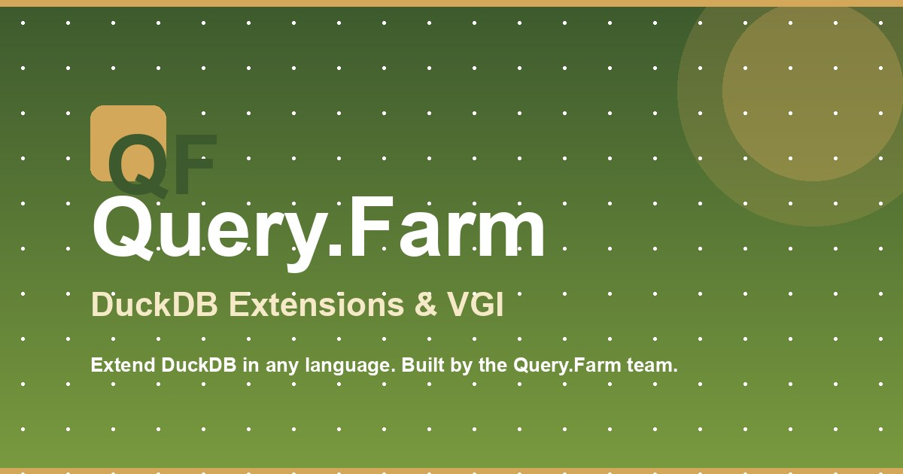

Current default
This is the selected first concept and now serves as the site-wide fallback.

/ and fallback
Make anything queryable.
A broader promise than DuckDB alone, expressed with the same restrained type, palette, and layered-systems language as the homepage.
Inheritance: any page without its own
ogImage receives this image. The important landing pages below now use their own route-specific cards.Important pages & products
Each concept uses the page’s real positioning and product mark while staying visibly part of one Query.Farm system.
Favicon, in context
The current Strata Sun remains recognizable at 16px, preserves the site palette, and avoids relying on fine detail.
16px
32px
64px
Query.Farm — Make anything queryable
Query.Farm — Make anything queryable